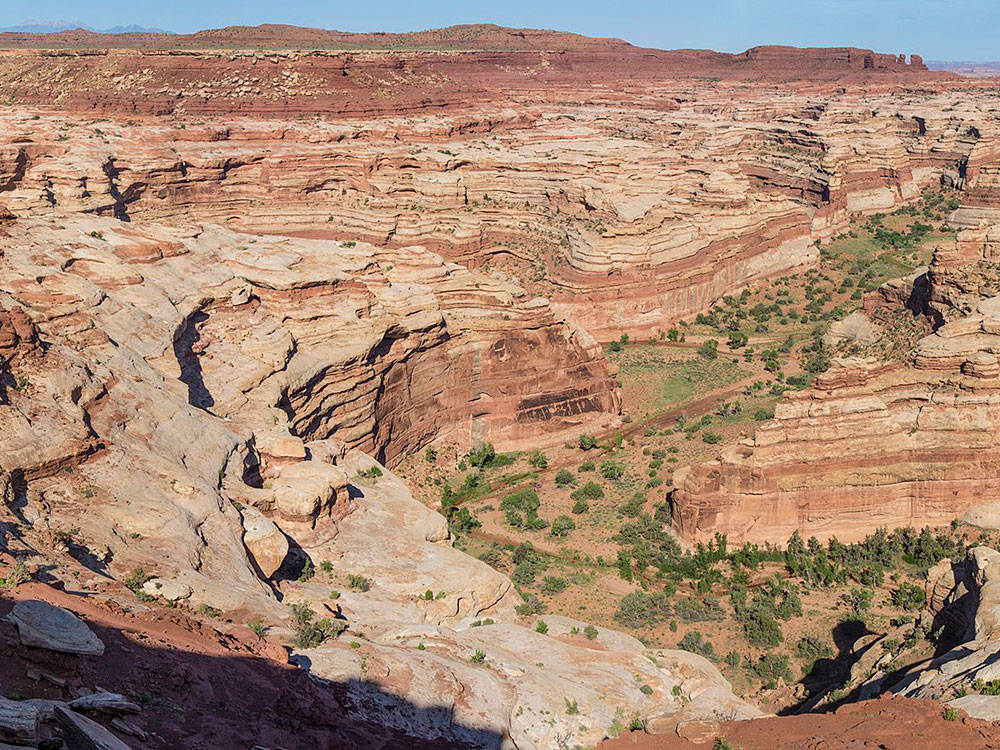
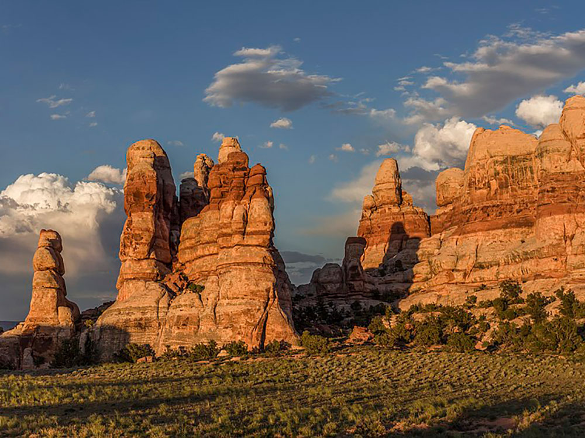

.jpg){kind=link}
A vast backcountry wilderness of deep canyons, towering mesas, intricate rock formations, and remote desert landscapes offering one of the most isolated outdoor experiences in the American Southwest.
Private Vehicle: $30 (7-day pass)
Motorcycle: $25 (7-day pass)
Individual (walk-in/bicycle): $15 (7-day pass)
America the Beautiful and other federal passes accepted
How to Get There
From Hanksville (50 mi): Follow UT-24 south to the Hans Flat Ranger Station access road, continue on remote high-clearance backcountry roads across the Orange Cliffs region, and proceed into the district using designated four-wheel-drive routes.
Overview
The Maze District is the most remote and least visited region of Canyonlands National Park, a landscape of labyrinthine canyons, sheer sandstone walls, broad mesas, and rugged desert terrain sculpted over millions of years. Its name comes from the intricate network of narrow canyons that confounded early explorers and continue to challenge modern adventurers. With few marked routes and vast distances between services, the area preserves a sense of wilderness rarely encountered in the national park system. Visitors are rewarded with extraordinary solitude, sweeping vistas, and geological formations that reveal the immense power of erosion across the Colorado Plateau.
Exploring the district requires careful planning, but the experience is unmatched for those seeking true backcountry adventure. Highlights include overlooks into the Green River canyon, striking rock formations such as the Chocolate Drops, and ancient cultural sites left by Indigenous peoples who once inhabited the region. Four-wheel-drive roads, backpacking routes, and primitive campsites allow travelers to immerse themselves in an environment where natural processes dominate and modern development is nearly absent. The combination of dramatic scenery, archaeological significance, and profound isolation makes this region one of the crown jewels of the American desert Southwest.
Access Overview
The Maze is the most remote and least-visited district of Canyonlands National Park. Located in the park's southwestern corner, this vast wilderness of sandstone fins, twisting canyons, rock spires, and isolated plateaus is considered one of the most rugged backcountry destinations in the United States. Unlike Island in the Sky or The Needles, a visit to The Maze requires extensive planning, self-sufficiency, and a willingness to travel far from services, paved roads, and cell coverage.
Most visitors spend at least three days exploring The Maze, while many adventures last a week or more. The district is famous for its solitude, challenging four-wheel-drive roads, difficult backpacking routes, archaeological sites, and spectacular formations such as the Doll House, Land of Standing Rocks, and Harvest Scene pictographs.
Do You Need Reservations or Permits?
| Activity | Permit Required? |
|---|---|
| Day Visits | No reservation generally required. |
| Overnight Backpacking | Yes, backcountry permit required. |
| 4WD Overnight Trips | Yes, backcountry permit required. |
| Mountain Bike Overnight Trips | Yes, backcountry permit required. |
All overnight trips within The Maze require a backcountry permit. Four-wheel-drive and mountain bike groups must stay at designated campsites, while backpackers may reserve either designated campsites or at-large backpacking zones.
How Permit Reservations Work
| Season | Permit Release Date |
|---|---|
| Spring (Mar 10 - Jun 9) | November 10 |
| Summer (Jun 10 - Sep 9) | February 10 |
| Fall (Sep 10 - Dec 9) | May 10 |
| Winter (Dec 10 - Mar 9) | August 10 |
Overnight permits become available on Recreation.gov approximately four months before each travel season and can be highly competitive during spring and fall.
Getting to The Maze
| Access Point | Details |
|---|---|
| Hans Flat Ranger Station | Primary access point located approximately 2.5 hours from Green River, Utah. |
| From Hans Flat to The Maze | Requires an additional 3-6+ hours of high-clearance 4WD travel. |
| Hite Marina Access | Alternative 4WD approach from the south near Lake Powell. |
Visitors should not rely exclusively on GPS devices, as navigation errors are common. Detailed maps and route planning are essential. There are no gas stations, food services, cell service, or potable water sources within The Maze.
Major Destinations
| Destination | Overview |
|---|---|
| The Doll House | A spectacular cluster of sandstone towers and one of the district's most famous destinations. |
| Land of Standing Rocks | Maze-like formations, towers, and dramatic desert scenery. |
| Harvest Scene Pictographs | One of the most significant rock art panels in the Southwest. |
| Chimney Rock | Prominent sandstone landmark within the Maze backcountry. |
| Horseshoe Canyon | Home to the famous Great Gallery pictographs and ranger-led hikes during select seasons. |
Popular Activities
- Backpacking through remote canyon systems and designated backpacking zones.
- High-Clearance 4WD Exploration on some of the most challenging roads in the National Park System.
- Rock Art Viewing including the Harvest Scene and Great Gallery panels.
- Photography featuring sandstone formations, desert landscapes, and dark skies.
- Primitive Camping in designated backcountry campsites.
Important Planning Considerations
- High-clearance four-wheel-drive vehicles are essential.
- Carry all water needed for the trip.
- Expect no cell coverage.
- Vehicle recovery can be extremely difficult and expensive.
- Roads may become impassable after rain.
- Visitors should be prepared for self-rescue.
The National Park Service considers The Maze one of the most remote areas in the National Park System and advises visitors to be completely self-sufficient.【3-08f636】
Best Time to Visit
| Season | Conditions |
|---|---|
| Spring | Most popular season with mild temperatures and ideal hiking conditions. |
| Fall | Excellent temperatures and generally stable weather. |
| Summer | Extreme desert heat can create dangerous conditions. |
| Winter | Cold temperatures and occasional road closures due to weather. |
Recommended for First-Time Visitors
The most accessible introduction to The Maze is often a multi-day 4WD trip to the Doll House combined with short hikes into the Land of Standing Rocks. Visitors interested in archaeology should consider a hike to the Harvest Scene or a separate visit to Horseshoe Canyon to view the renowned Great Gallery pictographs. Because of the area's remoteness, first-time visitors should carefully research routes, road conditions, and permit requirements before departure.
Information in this article is based on visitor guidance, permit requirements, and backcountry planning resources provided by the National Park Service Maze District page and the Canyonlands National Park Permits & Reservations page.
This article uses material from the Wikipedia articles and official tourism pages for the Maze District, which are released under the Creative Commons Attribution-Share-Alike License 3.0.

.jpg){kind=link}

.jpg){kind=link}